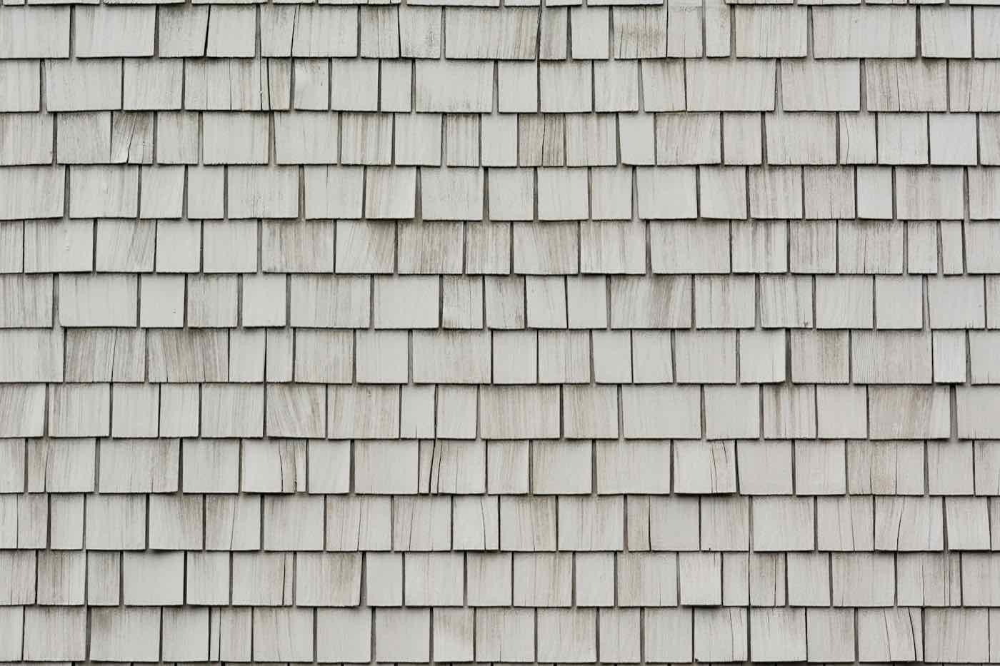

Central Texas Roofing
Since 1976
Licensed. Insured. Guaranteed to Beat Any Written Estimate by $300.
Hail Hit Your Roof? We Handle Everything.
Free Damage Inspection
A licensed roofer on your roof — not a salesperson in your driveway. We document every impact, every soft spot, every exposed mat with photos you can hand to your adjuster.
We Work With Your Adjuster
We meet your insurance adjuster on-site, walk the roof together, and make sure nothing legitimate gets missed. Decades of claims experience in Central Texas.
Deductible Only, In Most Cases
When hail damage is covered, most homeowners pay only their deductible. No surprise out-of-pocket costs — we itemize every line before work begins.
Central Texas hail season runs hardest from March through June, and Williamson, Travis, Hays, and Burnet counties take the brunt of it almost every year. A single supercell over Georgetown, Cedar Park, or Round Rock can bruise thousands of shingles in minutes — and the damage isn't always visible from the ground. What looks like a clean roof from the driveway often hides cracked mats, granule loss, and exposed fiberglass that will fail the first hard rain after the storm.
If you suspect hail damage on your home in Liberty Hill, Leander, Pflugerville, or anywhere across the Austin metro, time matters. Most Texas insurance carriers have a one-year window to file a storm claim, and adjusters treat older damage with more scrutiny. The earlier we inspect, the stronger your claim — and the lower the chance a leak catches you by surprise six months later.
We've been answering hail calls in Central Texas since 1976. We know what adjusters look for, we know the local building codes, and we know every major Texas carrier's claim process by heart. One call starts the whole thing: free inspection, photo-documented report, and a direct line to us through the entire claim.
What We Do
Full-service roofing for Central Texas homeowners — from a single leak repair to a complete tear-off and rebuild.
Full Roof Replacement
Complete tear-off and rebuild using quality shingles and underlayment rated for Texas sun and Texas storms. Manufacturer warranty plus our workmanship warranty.
Storm & Hail Damage Repair
Fast response after severe weather. We document damage, work with your insurer, and get your roof back to weather-tight condition quickly.
Insurance Claim Assistance
We meet your adjuster on the roof and advocate for a full, fair scope of work. Decades of experience with every major Texas carrier.
Roof Repairs & Maintenance
Leaks, missing shingles, flashing problems, pipe boots, valleys. We fix the real problem, not just the symptom, and we stand behind the work.
New Construction Roofing
Builders and custom home clients: on-time, on-spec, inspection-ready roofs. Straight communication from start to final walkthrough.
Free Roof Inspections
No-pressure, no-obligation roof inspection with a photo report. If your roof is fine, we'll tell you it's fine.
Why Homeowners Choose Paris Roofing

Nearly 50 Years in Business
Terry Paris founded Paris Roofing in 1976 and has been putting roofs on Central Texas homes ever since. Your neighbor probably knows us — and we intend to keep it that way.
$300 Bid Guarantee
Show us any licensed contractor's written estimate and we will beat it by $300. In writing. No games, no last-minute add-ons, no "supplements" that weren't in the quote.
Insurance Claim Experts
We've worked with every major Texas insurance carrier and we know how their adjusters think. We fight for your full, fair claim — not a trimmed-down scope that leaves you underpaid.
Local Family Business
We live here. We work here. Your roof isn't a transaction — it's our reputation in your neighborhood. When something needs to be made right, we answer the phone.
Proudly Serving the Austin Metro and Hill Country
Paris Roofing has been working Central Texas for nearly fifty years. That means we know the local building codes, the way Hill Country sun ages a shingle, which neighborhoods got slammed in the last hail event, and how every major insurance carrier in Texas handles a storm claim. Based in Liberty Hill, we cover every community within about sixty miles — from the Austin metro core out through the Hill Country. If you're not sure whether you're in our area, call us. We probably already drive past your street.
What Our Customers Say
"[REVIEW PLACEHOLDER — to be replaced with real Google review text]"
"[REVIEW PLACEHOLDER — to be replaced with real Google review text]"
"[REVIEW PLACEHOLDER — to be replaced with real Google review text]"
Get Your Free Estimate
Tell us a little about your roof and we'll come take a look — no pressure, no obligation.